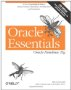
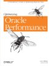
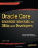

Books, software downloads and newsgroups.
Oracle DBA - A collection of notes sourced from the Oracle newsgroups.
ixora - Questions with answers by Steve Adams, expert on Oracle internals.
Ask Tom - Tom answers Oracle questions, with a searchable archive of answers.
Jonathan Lewis - Valuable insights from an expert on the Oracle database engine.
oracle.com/support - Oracle support services.
OraFAQ - Searchable message forums for SQL, RDBMS, Imp, Exp, Reports and many other Oracle related areas.
Oracle-Base - Examples and Scripts
HarmanResearch - Simple SQL Scripts for database administrators.docs.oracle.com - Documentation (pdf and html)
psoug.org - Morgan's library
Bobby-Tables - Preventing SQL Injection
technet.oracle.com - Oracle Technology Network - for DBA's and developers.
Security Alerts - Security updates from Oracle Corp
The official Oracle documentation set is the essential reference with all platform and version specific details.
 Oracle Essentials: Oracle Database 12c by Rick Greenwald
A detailed overview of the inner workings of the Oracle database.Effective Oracle by Design by Thomas Kyte
The book covers schema design, SQL and PL/SQL, tables and indexes, and much more. Optimizing Oracle Performance by Cary Milsap
How to use diagnose and repair performance problems. Use response time statistics to predict the impact of upgrades and other system changes.
 Oracle Core: Essential Internals for DBAs and Developers by Thomas Kyte
Essential information about Oracle Database internals that every database administrator needs for troubleshooting.
Oracle Software - Oracle software downloads (whole CD's)
SQL Developer - Free developer tool from Oracle
comp.databases.oracle.server - The busiest and best Oracle newsgroup.
Oracle Corp. Forums
SS64 - Discussion Forum
“When I started Oracle, what I wanted to do was to create an environment where I would enjoy working. That was my primary goal” - Lawrence J. Ellison